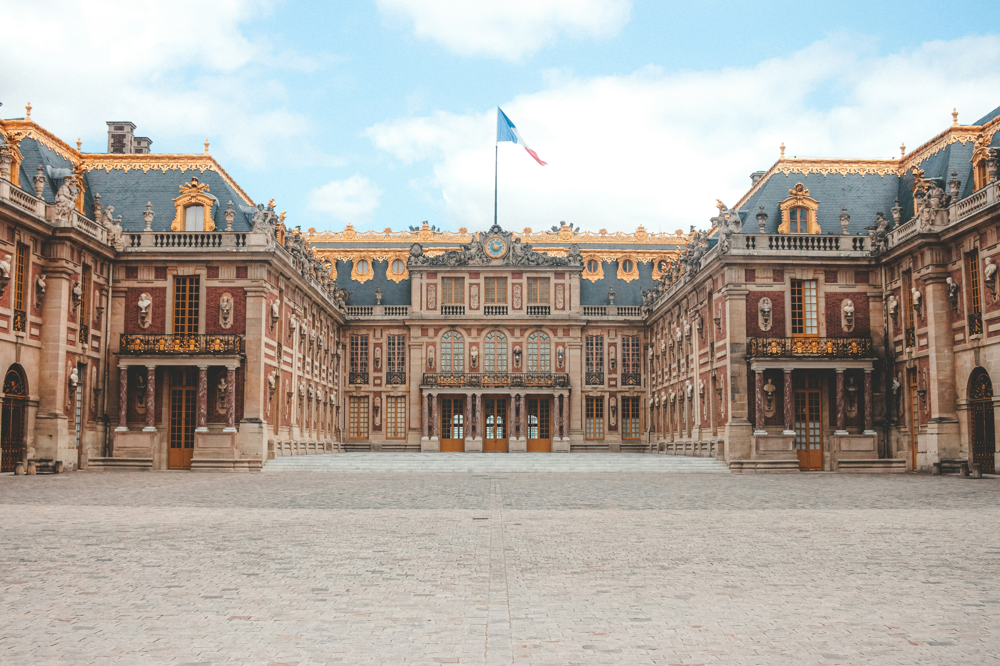

The Palace of Versailles is a former royal residence commissioned by King Louis XIV located in Versailles, about 19 kilometers west of Paris, France

Mont-Saint-Michel is a tidal island and mainland commune in Normandy, France. The island lies approximately one kilometre off France's north-western coast, at the mouth of the Couesnon River near Avranches and is 7 hectares in area.

The Arc de Triomphe de l'Étoile is one of the most famous monuments in Paris, France, standing at the western end of the Champs-Élysées at the centre of Place Charles de Gaulle, formerly named Place de l'Étoile—the étoile or "star" of the juncture formed by its twelve radiating avenues.